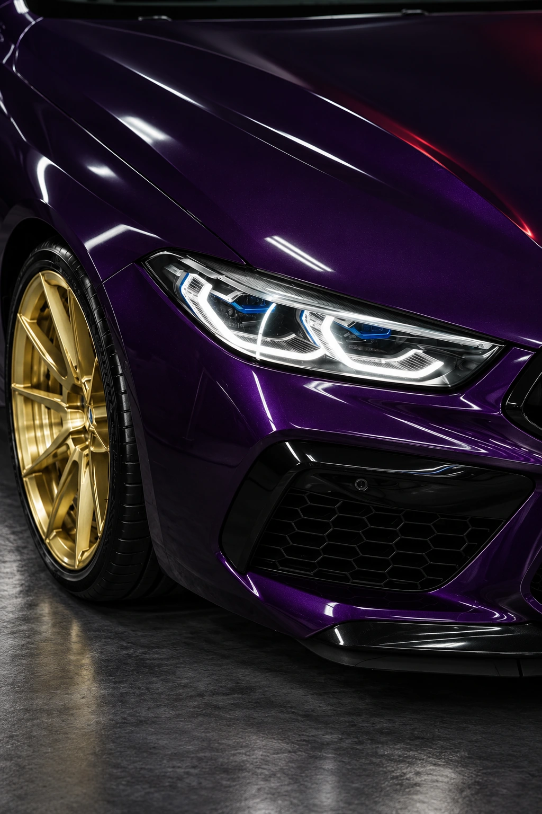
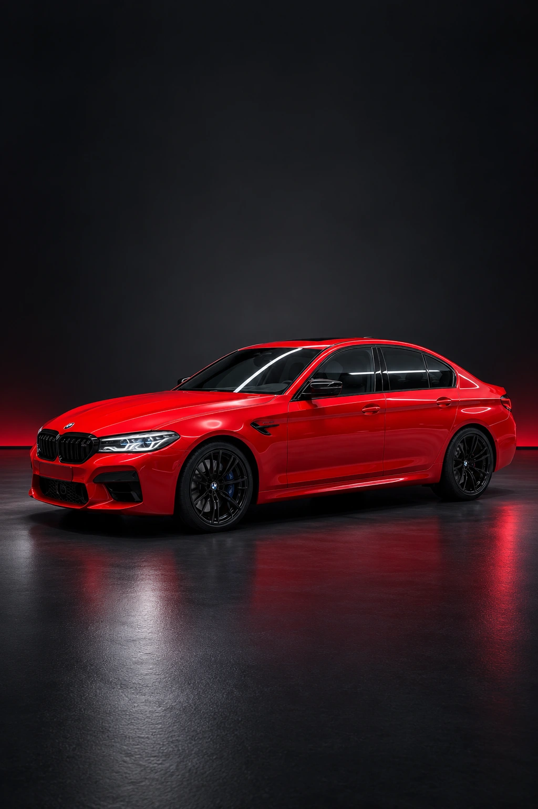
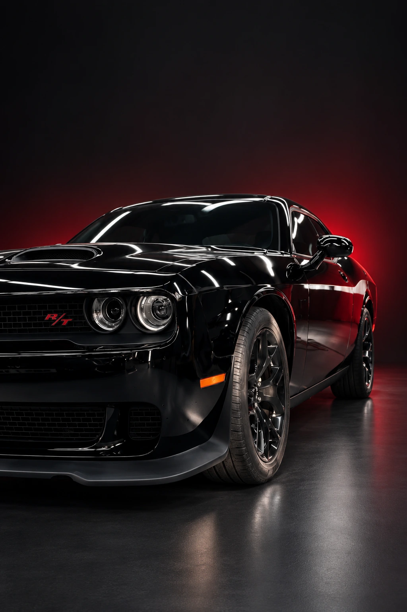

Антигравийная плёнка
Прозрачная защитная плёнка помогает уберечь лакокрасочное покрытие от дорожного песка, мелких сколов и повседневных воздействий.
Добавить к подборуПосмотреть автомобиль


Защита кузова, полировка и уход за салоном.
Iron Horse · Москва
От защиты нового кузова до восстановления блеска. Выберите, что нужно вашему автомобилю.
Прозрачная защитная плёнка помогает уберечь лакокрасочное покрытие от дорожного песка, мелких сколов и повседневных воздействий.
Добавить к подборуПолировка помогает скорректировать мелкие дефекты лакокрасочного покрытия и вернуть поверхности выразительный блеск. Подход подбирается по состоянию кузова.
Добавить к подбору
Защитное покрытие придаёт поверхности гидрофобные свойства и облегчает повседневный уход. Состав и подготовка зависят от состояния автомобиля.
Добавить к подборуДеликатная очистка обивки, ковров, пластика и других поверхностей салона. Специалист подберёт подход к материалам и характеру загрязнений.
Добавить к подбору
Тонирование помогает изменить светопропускание стёкол и внешний вид автомобиля. Тип плёнки, зоны нанесения и допустимые параметры обсудите со специалистом.
Добавить к подбору
Детальная очистка кузова с вниманием к сложным зонам, дискам и отдельным элементам. Подходящий состав процедуры уточняется с мастером.
Добавить к подбору
Автомобили в кадре Iron Horse.
Свет, цвет и внимание к деталям.
Выберите услуги и филиал. Подготовим сообщение для обсуждения в WhatsApp.
Детейлинг начинается с внимания к вашему автомобилю и вашим ожиданиям.
Подберём уход под состояние автомобиля: от регулярной очистки до восстановления внешнего вида.
Уточним подходящие услуги, материалы, сроки и стоимость до записи на работы.
Спросите специалиста, как ухаживать за поверхностями после выбранной процедуры.
Москва, Махачкала и Каспийск.
Свяжитесь с удобным филиалом.
Плёнка создаёт физический защитный слой на поверхности кузова. Керамическое покрытие помогает упростить уход и поддерживать блеск. Это разные задачи: подходящее решение зависит от эксплуатации автомобиля и вашего запроса. Обсудите сочетание процедур со специалистом.
Напишите в выбранный филиал: укажите марку, модель, желаемые работы и при возможности приложите фотографии. Для окончательной оценки может потребоваться осмотр автомобиля.
Да, запрос на защиту нового автомобиля можно обсудить в WhatsApp. Специалист уточнит состояние покрытия, подходящие зоны защиты и последовательность работ.
Сначала согласуйте время и состав работ с филиалом. Для химчистки салона заранее уберите личные вещи. Остальные рекомендации зависят от выбранной процедуры — их уточнит специалист.